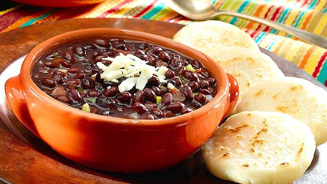

Caraotas

Description
In Venezuela, black beans, called Caraotas Negras,
can be found simmering on the stove in kitchens throughout the country.
Venezuelan Black Beans are an important component of the national dish, Pabellon Criollo, served with white rice and shredded beef. Caraotas Negras
are also served stuffed into freshly-toasted arepas (corn patties) with shredded white cheese.
Recipes for Caraotas Negras vary by region and family (in central Venezuela, home cooks often add brown sugar).
Either way, this authentic, Venezuelan recipe is not to be missed!
Ingredients
- 2 slices of bacon, finely chopped
- 1/2 large onion, finely chopped (about 3/4 cup)
- 1/2 red and/or green bell pepper, finley chopped
- 1 tbsp. Minced garlic
- 1 tbsp. Brown Sugar Caned (Panela), finely grated, or 1 tbsp. brown sugar (optional)
- 2 cans Black Beans
- Adobo all purpose seasoning with pepper, to taste
- 3 Sprigs fresh cilantro, finely chopped
- 1 tbsp. Extra Virgin Olive Oil
- 2 oz. Queso Blanco, grated (for serving)
Steps
- Add bacon to medium saucepan over medium-high heat.
Cook until fat is rendered and bacon begins to crisp, about 7 minutes. Add onions, peppers and garlic.
Cook, stirring occasionally, until onions soften and begin to brown, about 12 minutes.
Stir in brown sugar cane (if desired), stirring until well combined.
-
Stir in black beans, ¾ cup water and Adobo.
Bring mixture to boil. Reduce heat to medium-low.
Simmer, stirring occasionally, until bean mixture thickens and beans are heated through, 10-15 minutes more.
Stir in cilantro and olive oil just before serving. Top with queso blanco, if desired.
-
Serve as part of Venezuelan Shredded Beef (Pabellon Criollo) or serve with Arepas.